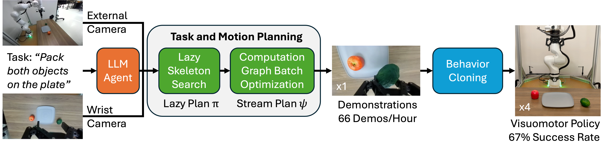

DemoStream: Batched Task-and-Motion-Plan Optimization for
Automated Learning from Demonstration
Overview
DemoStream is a sampling-based Task and Motion Planning (TAMP) system that uses batch optimization to fully automate demonstration generation while explicitly optimizing demonstration quality for imitation learning, producing consistent, low-variance trajectories that are easier for a policy to learn from.

Contributions
- New TAMP batched samplers and computation graph optimizers for GPU-accelerated plan optimization.
- Imitation-learning analysis of the effect of action space, cost function, and batch size on policy success rates.
- Safe automated real-world demonstration collection and policy learning.
- Simulation experiments demonstrating long-horizon, multi-robot, and agentic DemoStream capabilities.
Abstract
Learning from demonstration is an effective strategy for endowing robots with manipulation capabilities but requires training on datasets comprised of massive amounts of demonstrations. Existing demonstration collection approaches either require constant human involvement, for example, via teleoperation, or are specialized for a single task. Task and Motion Planning (TAMP) systems are able to autonomously solve and therefore generate demonstrations for general-purpose tasks; however, learning from their demonstrations has proven difficult due to multi-modality in their solutions. In this work, we build on recent work leveraging GPU acceleration for TAMP and propose DemoStream, a TAMP system that optimizes demonstration quality in order to improve behavior cloning success rates. First, we introduce batched TAMP sampling operations along with a new TAMP algorithm that correspondingly performs batched constraint satisfaction in order to explore many solutions in parallel. We conduct simulation experiments ablating different action spaces, cost functions, and batch sizes to analyze the effect of these choices on downstream policy success rates. Finally, we show that we can leverage the safety guarantees of TAMP to directly collect real-world demonstrations at an average rate of 66 demos per hour.
Supplementary Video
Experiments
We ablate the ingredients of DemoStream — cost function, motion planner, and batch size — then show it in action across real-world, multi-arm, long-horizon, and agentic open-world settings.
Demonstrations Across Cost Functions
Task-space cost optimization minimizes camera motion, leading to higher success rates due to smaller observation distributions. Videos use the Joint-Abs action space and T-PRM motion planner.
Demonstrations Across Motion Planners
Joint-space motion planners find efficient trajectories but produce long end-effector (and wrist-camera) paths, note the “looping behavior” in the first three planners. Task-space motion planning (T-PRM) directly minimizes camera motion. Videos use the Joint-Abs action space and Task cost function.
Demonstrations as Batch Size Increases
Larger optimization batch sizes reduce demonstration variance and are easier to learn.
Simulation and Real-World Demonstrations
DemoStream leverages GPU-accelerated simulation to evaluate ~100 TAMP plans at a time in tiled environments, then trains policies on the successful demonstrations. The same system is used for direct real- and open-world automated demonstration generation.
Learned policy rollouts on the real robot:
Multi-Arm Demonstration Generation
DemoStream optionally produces several multi-arm strategies based on the initial proximity of objects to each robot. Multi-Arm (Joint-Abs, Task, T-PRM) achieves 50% Diffusion Policy SR.
Simulation Task Suite
Policy success rates across a suite of long-horizon stacking and packing tasks, including blocked variants that require reasoning about obstruction.
RoboLab Benchmark Demonstrations
An LLM agent interprets natural-language goals for DemoStream, letting us lazily implement novel open-world goals in a batchable manner.
Example TAMP rollouts on RoboLab tasks:
Problem Formulation
DemoStream is written in ScheduleStream, a Python language for planning problems with continuous samplers. A problem is declarative where it can be — as predicates, functions and actions — and procedural where it must be, as Python functions that test, score or sample continuous values (configurations, grasps, placements, trajectories). The walkthrough below uses DemoStream's single-robot, two-object packing task as a running example: pack both the red and blue blocks onto the plate.
1. Constants
A problem is over a universe of constants, atomic values of any Python type:
discrete constants like the strings "red", "blue",
"plate", "table"; and continuous constants, such as
PyTorch tensors for robot configurations q ∈ ℜd and object
placement / grasp poses p, g ∈ SE(3).
objects = ["red", "blue", "plate", "table"] q0 = torch.tensor([...]) # initial robot configuration p_r, p_b, p_p = ... # SE(3) poses of each object
2. Predicates and functions
Relationships among constants are described by functions — relations from a tuple of
inputs to one output — and predicates — functions whose output is a Boolean. Every
predicate and function specifies a cond that conveys typing information
about its parameters. Parameters begin with ?.
Conf = Predicate("?q")
Object = Predicate("?obj")
Placement = Predicate("?obj ?p")
Grasp = Predicate("?obj ?g")
# Fluent (state-variable) functions
At = Function() # current robot configuration
Holding = Function() # object the robot holds, or None
Attached = Function("?obj", cond=[Object("?obj")]) # parent frame in the kinematic tree
Pose = Function("?obj", cond=[Object("?obj")]) # SE(3) pose w.r.t. the parent frame
Any undeclared predicate value is False and any undeclared function
value is None, so the closed-world assumption keeps the state concise.
3. Initial state and goal
A state is the collection of function values. Assignments use <=;
equalities (which may appear in goals or preconditions) use ==.
initial_state = [
At() <= q0, Holding() <= None,
Pose(red) <= p_r, Pose(blue) <= p_b, Pose(plate) <= p_p,
Attached(red) <= table, Attached(blue) <= table, Attached(plate) <= table,
]
goal = [Attached(red) == plate, Attached(blue) == plate] # pack both blocks
4. Actions — move, pick, place
An Action has params (variables bound when
it is applied), cond (what must hold now), eff
(what the state becomes), and cost. Three actions suffice for the packing
domain:
move = Action(
params = "?q1 ?t ?q2",
cond = [Motion("?q1 ?t ?q2"), At() == "?q1"],
eff = [At() <= "?q2"],
cost = [Distance("?q1 ?q2")],
)
pick = Action(
params = "?q ?obj ?g ?p",
cond = [Kin("?q ?obj ?g ?p"), Holding() == None,
Pose("?obj") == "?p", At() == "?q"],
eff = [Holding() <= "?obj", Pose("?obj") <= "?g",
Attached("?obj") <= None],
)
place = Action(
params = "?q ?obj ?g ?p ?o2 ?p2",
cond = [Kin("?q ?obj ?g ?p"), Holding() == "?obj",
Support("?obj ?p ?o2 ?p2"),
Pose("?o2") == "?p2", Pose("?obj") == "?g", At() == "?q"] +
[~Collision("?obj", Pose("?obj"), o, Pose(o)) for o in objects],
eff = [Holding() <= None, Pose("?obj") <= "?p",
Attached("?obj") <= "?o2"],
)
Note that move's cost is a procedural
Distance function of the two configurations — this is the knob
DemoStream's cost-function ablation turns, choosing between a joint-space and a task-space
distance to shape the demonstration distribution.
5. Streams — where continuous values come from
Actions above refer to static predicates like Grasp,
Support, Kin, and
Motion whose satisfying assignments must come from somewhere.
Streams are conditional samplers: given a tuple of input constants, they yield output
constants certified to satisfy a predicate. Streams compose into a pipeline
grasps → ik_qs → motions.
def grasp_gen(obj: str) -> Iterator[Tuple[Tensor]]:
... # yields grasp poses for ?obj
grasps = Stream(Grasp, inps="?obj", gen=grasp_gen)
6. Batched streams — the DemoStream contribution
A regular stream consumes one input at a time. That is limiting when we want to leverage
advances in batched inverse kinematics to solve many IK subproblems simultaneously, for different
grasp and placement combinations. DemoStream augments the stream contract: a
BatchStream takes a list of input tuples and returns a list of
output tuples per input, with a maximum batch size.
def ik_fn(inp: List[Tuple[str, Tensor, Tensor]]) \
-> List[List[Tuple[Tensor]]]:
... # one GPU IK call per batch
ik_qs = BatchStream(Kin, inps="?obj ?g ?p", fn=ik_fn, batch=256)
Placement generation, IK, and motion planning all take continuous inputs and all become batched:
placements = BatchStream(Support, inps="?obj ?o2 ?p2", fn=support_fn, batch=inf)
ik_qs = BatchStream(Kin, inps="?obj ?g ?p", fn=ik_fn, batch=256)
motions = BatchStream(Motion, inps="?q1 ?q2", fn=motion_fn, batch=1)
Distance = Function("?q1 ?q2", fn=distance, batch=inf) # cost function
Collision = Predicate("?obj1 ?p1 ?o2 ?p2", test=collision, batch=inf)
7. How the planner solves it
DemoStream alternates two phases:
- Schedule. A sequential search over actions, with placeholders for every unbound
continuous value, finds a candidate plan
π. - Sample. The streams on the critical path are called, in batch, so that the plan's parameters have real values. If no satisfying binding is found at or below the current cost budget, the planner retries another schedule.
For a plan that picks the red block and places it on the plate,
plan = [move(q0, "?t1", "?q1"),
pick("?q1", red, "?g", p_r),
move("?q1", "?t2", "?q2"),
place("?q2", red, "?g", "?p", plate, p_p)]
the retraced stream plan is placements → grasps → ik_qs → motions.
If grasps and placements each generate 1,000
outputs per input, the bottleneck is ik_qs at
batch=256; sorting candidate bindings by cost and filtering by
constraints keeps the best 256 pairs on the GPU. That is what powers both the
batch-size and
cost-function ablations above.
Citation
This work is currently under anonymous double-blind review. A full citation will be added upon publication.
Anonymized project page.
Updated September 2026